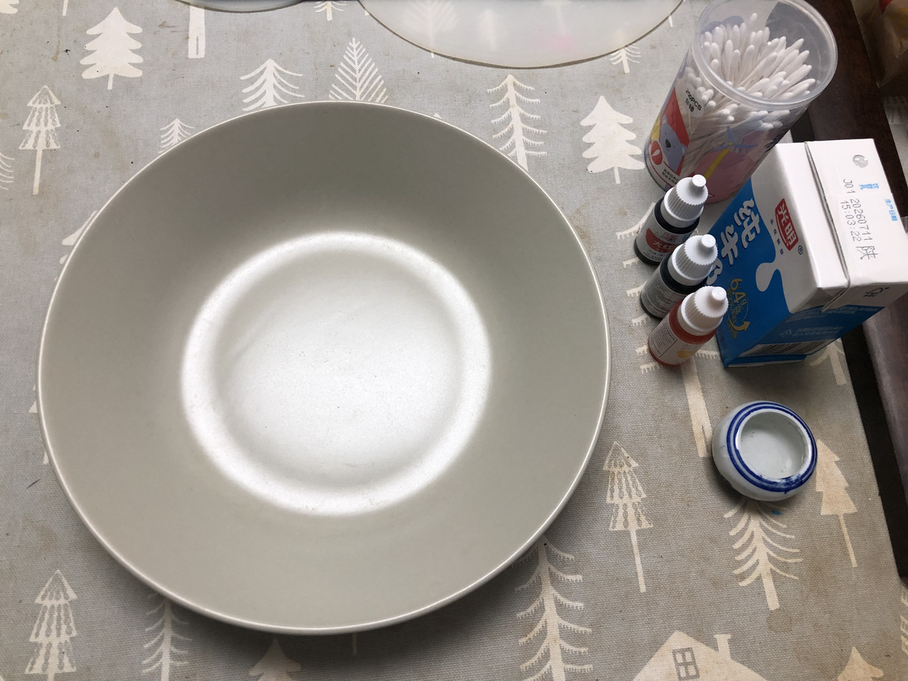
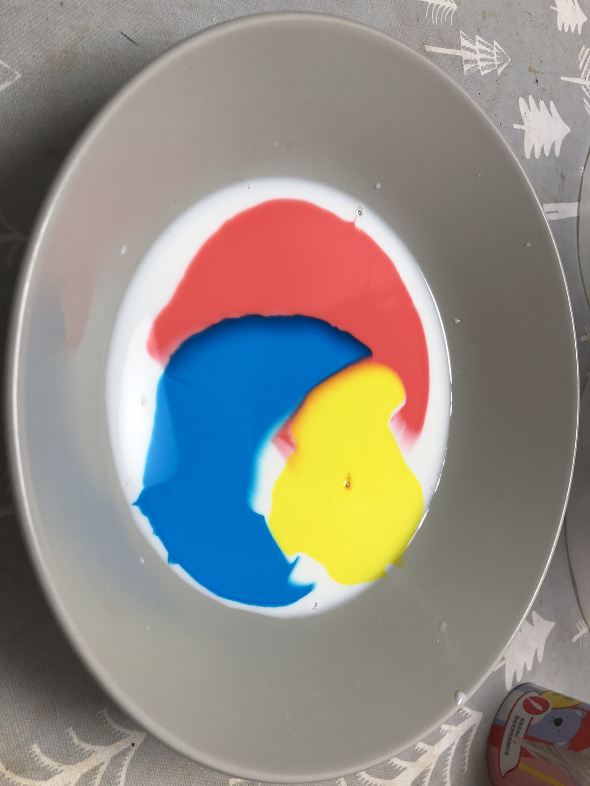
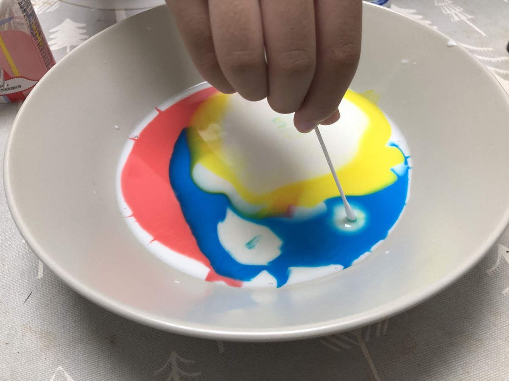
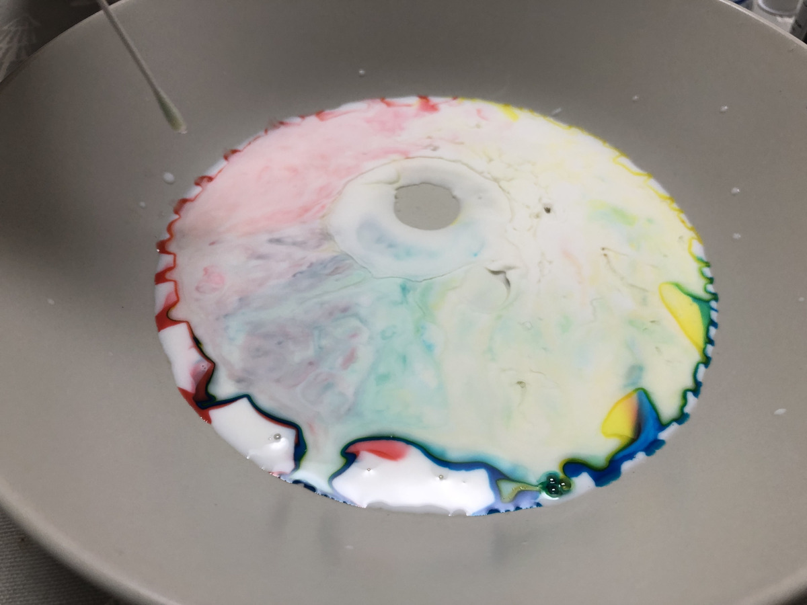
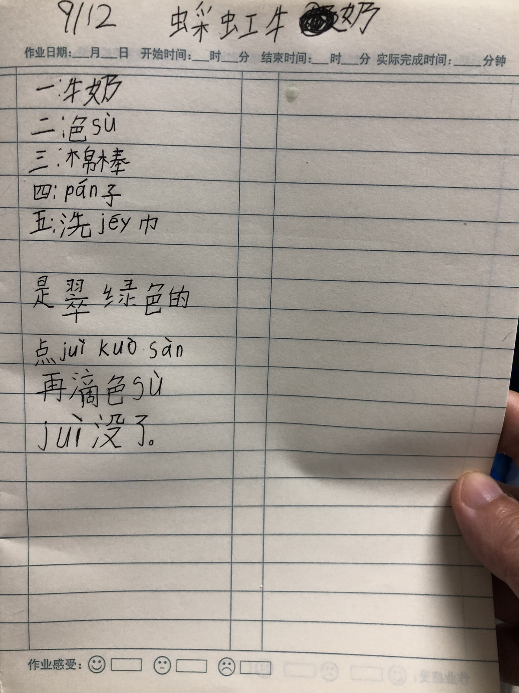

STAGE 01 · 零门槛物料
100% 厨房常备：连包装盒都没扔
全脂牛奶、红黄蓝水性色素、一滴洗洁精、几根棉签、一个白盘。没有昂贵教具，最好的科学实验室就在家里的餐桌上。

STAGE 02 · 首席科学家就位
倒牛奶、滴三原色：小手自主掌控
牛奶缓缓铺满盘底，用小滴管小心数着滴数把红、黄、蓝色水滴入正中央。爸爸只做助手，凡是小手能做的绝不代劳。

STAGE 03 · 高光爆炸与变量魔改
棉签一碰色彩大爆炸，更整杯倒入炸出“孤岛”
蘸洗洁精的棉签轻触瞬间，色彩向四周狂暴炸开！玩了几次后，小龙包突发奇想把整杯洗洁精全倒了进去——洗洁精强大的表面活性剂斥力硬生生将液体割裂，在中央炸出了一座边界清晰的“彩色孤岛”！

STAGE 04 · 持续翻滚的星系
洗洁精疯狂抓脂肪，黄+蓝碰撞出翠绿
洗洁精分子到处游走追逐牛奶里的微小脂肪球（乳化去污原理），在盘内掀起微观洋流，推动颜色持续翻滚起舞几十秒，小龙包兴奋喊道：“看！变成翠绿色了！”

STAGE 05 · 灵魂高光
一份写满拼音的手记：7 岁孩子的探索仪式感
很多生字不会写，她就用拼音一笔一划认真标注。这是她人生中第一份完全属于自己的科学探索手记。

🔍 放大手记细节中的“爆款金句”：
🧠 这一场 40 分钟实验，孩子究竟带走了什么？
-
物理第一性原理的具身直觉：水分子手拉手的“表面张力”，与洗洁精抓油脂的“乳化作用”，化作终身受用的物理直觉。
-
工程师式的调试心态（Agency）：不怕翻车，主动改变变量（整杯倒入），体验切实改变物理世界的掌控感。
-
费曼学习法与科学小老师：第二天主动向好朋友生动讲解，甚至把没用完的试剂送给同学妈妈，邀请好朋友也去厨房做！